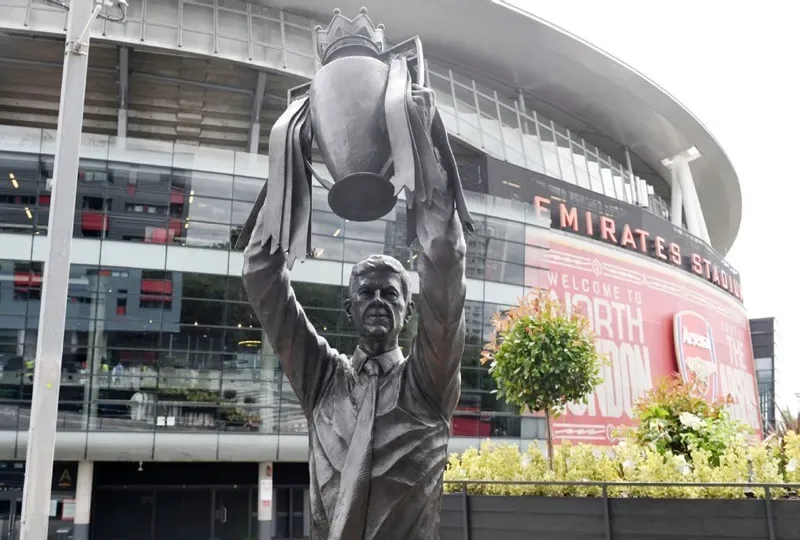
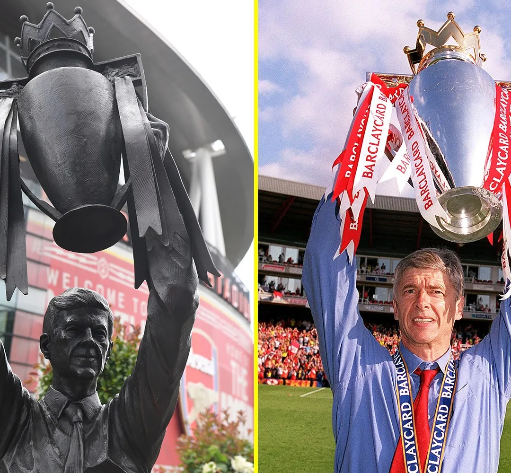

Tượng Đài · Arsène Wenger
The FutureHe Built.
Arsène Wenger, Arsenal và quãng đường rất dài từ một người xa lạ ở Highbury đến bức tượng bên ngoài Emirates.
00 / The Hawthorns · 18.03.2017
Hai chiếc máy bay.
Một Arsène Wenger.
Ngày 18 tháng 3 năm 2017, khi Arsenal đến làm khách trên sân The Hawthorns, một chiếc máy bay nhỏ xuất hiện trên bầu trời trước giờ bóng lăn. Phía sau nó là tấm biểu ngữ với lời yêu cầu ngắn gọn: “No Contract #WengerOut”. Chưa đầy nửa giờ sau, trong lúc trận đấu đang diễn ra, một chiếc máy bay khác bay qua mang theo thông điệp ngược lại: “In Arsene We Trust #RespectAW”. Ở dưới sân, Craig Dawson đã đưa West Brom vượt lên, Alexis Sánchez gỡ hòa rồi Arsenal lại thủng lưới thêm hai lần để thua 1-3. Những người đến sân hôm ấy hẳn vẫn còn nhiều điều để tranh cãi sau tiếng còi cuối cùng, nhưng hai chiếc máy bay đã nói đủ về tình trạng của Arsenal. Một bên không muốn Arsène Wenger ký thêm hợp đồng, bên kia vẫn tin rằng ông xứng đáng được tiếp tục, và cả hai đều tự nhận mình đang nghĩ cho câu lạc bộ.
Wenger nói sau trận rằng ông tập trung vào những gì xảy ra trên sân, không nhìn lên khán đài. Dù ông có thực sự thấy những biểu ngữ ấy hay không, thật khó tưởng tượng người đàn ông đã ở Arsenal hơn hai mươi năm lại không hiểu chúng muốn nói gì. Từ lâu, câu hỏi về thời điểm ông nên ra đi đã xuất hiện trong các cuộc tranh luận, ở những hàng ghế Emirates, trên truyền hình và trong những lần người ta ngồi nói chuyện bóng đá với nhau. Có những cổ động viên đã mệt mỏi vì một mùa giải lại khép lại theo cách quen thuộc, cũng có người không chịu nổi việc Wenger bị đối xử như thể hai thập kỷ trước đó chưa từng tồn tại. Có lẽ phần đau lòng nhất nằm ở chỗ cả hai cảm giác đều có thể xuất hiện trong cùng một người. Ta có thể giận ông vì những quyết định trong một trận đấu, rồi vài phút sau lại thấy khó chịu khi nghe ai đó nói về ông bằng một giọng khinh miệt.
“Có lẽ phần đau lòng nhất nằm ở chỗ cả hai cảm giác đều có thể xuất hiện trong cùng một người.”
Một người xa lạ.
Một Arsenal khác.
Hai mươi mốt năm trước buổi chiều ở West Brom, Arsenal đón Wenger trong một bầu không khí hoàn toàn khác. Khi ông tới Highbury vào tháng 10 năm 1996 sau quãng thời gian làm việc ở Monaco và Nhật Bản, báo chí Anh chưa biết nhiều về người đàn ông Pháp cao gầy với cặp kính và cách nói chuyện điềm đạm ấy. Arsenal khi đó có một hàng phòng ngự đã được xây dựng từ thời George Graham, có Dennis Bergkamp được đưa về dưới thời Bruce Rioch, có những cầu thủ giàu kinh nghiệm mà người hâm mộ đã thuộc từng bước chạy. Wenger tiếp nhận một đội bóng có sẵn cá tính, những thói quen tốt và cả những thứ ông muốn thay đổi. Điều đầu tiên khiến các cầu thủ chú ý đôi khi chẳng liên quan đến trái bóng.
Trong một cuộc phỏng vấn tháng 10 năm 1996, Wenger nói người Anh ăn quá nhiều đường, thịt và chưa đủ rau. Ông quan tâm tới bữa ăn trước trận, tới những gì cầu thủ đưa vào cơ thể và cách họ hồi phục sau khi thi đấu. Nhiều năm sau, chính Wenger nhớ lại chuyện ông cấm những thanh chocolate trên xe chở đội, khiến các cầu thủ đồng thanh đòi trả món ăn quen thuộc ấy. Hết giờ nghỉ giữa hai hiệp, ông ngạc nhiên vì phòng thay đồ im lặng khác thường, để rồi bác sĩ giải thích rằng mọi người đang đói. Câu chuyện ấy nghe vui khi đã biết kết quả về sau, nhưng nó cho thấy sự thay đổi bắt đầu từ những thứ nhỏ đến mức gần như buồn cười. Ông yêu cầu các cầu thủ suy nghĩ lại về một ngày làm việc của họ, từ bữa trưa cho đến phút cuối trên sân tập.
Wenger cũng chẳng thể làm tất cả một mình. Tony Adams, Lee Dixon, Steve Bould, Nigel Winterburn và David Seaman đã có những năm tháng gắn bó với Arsenal trước khi ông xuất hiện. Pat Rice ở lại bên cạnh ông. Bergkamp đã biết cách khiến một đường chuyền bình thường trở thành thứ mà cả khán đài phải đứng dậy nhìn theo. Những cái tên mới như Patrick Vieira, Emmanuel Petit hay Marc Overmars bước vào tập thể ấy và làm nó thay đổi dần. Wenger đủ khôn ngoan để không phá bỏ mọi thứ mình thừa hưởng. Arsenal vẫn biết cách phòng ngự, vẫn có sự cứng rắn của một đội bóng Anh, nhưng trái bóng bắt đầu được đưa về phía trước bằng một thứ nhịp điệu khác. Cú đúp năm 1998 đến nhanh hơn những gì nhiều người hình dung. Ngày Arsenal thắng Everton 4-0 để đăng quang tại Highbury, chính hai trung vệ Bould và Adams tạo nên pha bóng cuối cùng đẹp đến khó tin, một hình ảnh đủ để nói về cách quá khứ và tương lai đứng chung trong đội bóng ấy.
Những năm tiếp theo, Arsenal trở thành một phần không thể thiếu của cuộc đua với Manchester United. Người ta nhớ các cuộc khẩu chiến, những trận cầu căng thẳng giữa hai đội, nhưng nếu chỉ nhắc đến sự thù địch ấy thì vẫn chưa hiểu được niềm vui mà Wenger đem tới cho Highbury. Thierry Henry có thể nhận bóng ở sát đường biên trái, tăng tốc rồi xuất hiện trước khung thành chỉ sau vài nhịp chạy. Robert Pirès chọn những khoảng trống mà người xem nhiều khi chưa kịp nhận ra. Bergkamp chuyền bóng với vẻ bình thản, còn Vieira khiến khu trung tuyến của Arsenal có sức nặng riêng. Ljungberg luồn xuống phía sau hàng thủ đối phương, Ashley Cole băng lên từ cánh trái. Những cái tên ấy dần trở thành một thứ ngôn ngữ quen thuộc với người hâm mộ. Có những ngày ta chỉ cần nhìn Arsenal triển khai bóng từ giữa sân cũng đã thấy vui, bởi cảm giác bàn thắng có thể đến từ bất kỳ một pha phối hợp nào.
Arsenal giành cú đúp lần nữa năm 2002, đăng quang Premier League ngay tại Old Trafford nhờ bàn thắng của Sylvain Wiltord. Rồi đến mùa 2003/04, Wenger đưa đội bóng đi qua cả 38 trận vô địch quốc gia mà không thua lần nào. Chức vô địch được xác nhận ở White Hart Lane, sân của Tottenham, sau trận hòa 2-2. Những con số của mùa giải bất bại đã được lặp lại nhiều đến mức dễ trở nên khô khan, nhưng điều đáng nhớ ở Arsenal thời ấy nằm cả trong những chiều cuối tuần bình thường hơn. Wenger đã tạo ra một đội bóng khiến người hâm mộ chờ đợi cách họ giành chiến thắng, chứ không chỉ chờ kết quả. Đối với một thế hệ lớn lên cùng Highbury, ông là người đã định nghĩa bóng đá Arsenal nên trông như thế nào.
Highbury
became Emirates.
2006 · Một sân nhà mới, một tương lai mới và những năm tháng không hề đơn giản.
Để xây tương lai,
có những thứ phải trả.
Có lẽ vì thế mà mùa hè 2006 mang đến cảm giác lạ lẫm đến vậy. Highbury đóng lại, Emirates mở ra. Một sân bóng có hơn sáu mươi nghìn chỗ ngồi thay cho những khán đài cũ, một bước tiến lớn về thương mại và cơ sở vật chất mà ban lãnh đạo Arsenal đã theo đuổi suốt nhiều năm. Wenger là nhân vật quan trọng trong dự án ấy, nhưng sân vận động mới là thành quả của cả câu lạc bộ, từ những người lập kế hoạch, tìm nguồn vốn cho đến những người biến một khu đất ở Ashburton Grove thành sân nhà mới. Arsenal bước tới tương lai với niềm tin rằng một ngày nào đó họ sẽ có đủ tiềm lực để cạnh tranh bền vững với những đối thủ giàu có nhất. Đứng bên trong Emirates ngày khai trương hẳn phải là một trải nghiệm choáng ngợp. Dù vậy, người ta vẫn có thể nhớ cái cách Highbury giữ khán giả gần mặt sân, nhớ những góc khán đài đã quen mắt. Trong The Poetics of Space, Gaston Bachelard viết về những ngôi nhà như nơi trú ngụ của ký ức và trí tưởng tượng, nơi một góc cầu thang hay một căn phòng có thể giữ lại cảm giác của cả một quãng đời. Highbury cũng có những góc như thế trong trí nhớ người Arsenal. Emirates rộng hơn và cần thiết cho tương lai, nhưng không ai có thể yêu cầu những ký ức ấy chuyển nhà cùng một lúc.
Cái giá của bước chuyển ấy bắt đầu hiện rõ trong những năm tiếp theo. Arsenal phải phục vụ các khoản nợ xây dựng sân, trong lúc Chelsea và rồi Manchester City bước vào một thời đại chi tiêu khác. Fàbregas, Nasri, Van Persie lần lượt rời đi ở những mùa hè mà người hâm mộ đã quá mệt với việc phải học cách chia tay cầu thủ mình yêu thích. Mỗi người ra đi vì những lý do riêng, và sẽ thiếu công bằng nếu đổ tất cả cho khoản nợ Emirates. Nhưng cũng không thể bỏ qua bối cảnh tài chính khi nhìn lại những đội hình Wenger phải sử dụng. Năm 2016, giữa lúc bản thân đang chịu sức ép, ông kể với báo chí rằng các ngân hàng tài trợ dự án từng muốn ông cam kết ở lại năm năm để bảo đảm sự ổn định về chuyên môn. Đó là lời kể của Wenger về quá trình thương lượng tài chính, chứ không có nghĩa một chữ ký của ông tự mình dựng nên sân vận động. Nhưng việc ông nhắc tới nó vào lúc bị chất vấn về những năm trắng tay khiến người ta thấy rõ ông đã nhìn quãng thời gian ấy như thế nào.
Người hâm mộ Arsenal sống cùng một thứ lịch thi đấu rất quen. Đầu mùa giải, đội bóng chơi đẹp, có thể thắng những đối thủ mạnh và khiến người ta nghĩ rằng lần này sẽ khác. Khi mùa đông đi qua, đội hình bắt đầu bộc lộ những khoảng trống, chấn thương đến, rồi ở đâu đó trong tháng Hai hoặc tháng Ba, một cuộc đua lại rời khỏi tầm tay. Vẫn có những trận đấu đủ đẹp để xem đi xem lại, những tài năng trẻ khiến khán đài hy vọng và những năm Arsenal tiến rất gần đến một điều gì đó. Nhưng gần đến đâu cũng không được tính là đã chạm tay vào cúp. Wenger vẫn đứng bên đường biên, vẫn đưa ra những giải thích đầy kiên nhẫn sau trận đấu. Ông thường nói về chất lượng lối chơi, về niềm tin vào cầu thủ, về khả năng đội bóng sẽ trở lại. Những điều ấy có thể chân thành, dù càng về sau chúng càng khó làm dịu đi sự thất vọng.
Cũng có một sự thật khác cần được giữ lại. Trong gần hai thập kỷ, Wenger đưa Arsenal dự Champions League liên tục, duy trì một vị trí ổn định ở nhóm đầu bóng đá Anh trong thời gian câu lạc bộ thay đổi sân vận động và cấu trúc tài chính. Với nhiều đội bóng, điều đó là một thành tựu lớn. Với Arsenal, đặc biệt là Arsenal của chính Wenger, nó dần bị xem như mức tối thiểu. Ông đã góp phần nâng kỳ vọng lên cao đến mức những gì từng đáng ăn mừng không còn làm người ta hài lòng. Và Wenger cũng có trách nhiệm với những quyết định thể thao khiến Arsenal không đáp ứng nổi kỳ vọng ấy. Trong một câu chuyện kéo dài hơn hai mươi năm, cả hai điều đều cần được nói ra.
Chiếc FA Cup năm 2014 chấm dứt chín năm chờ danh hiệu. Arsenal tiếp tục vô địch giải đấu ấy năm 2015 và 2017. Những buổi chiều ở Wembley mang lại niềm vui thật, nhất là với những người đã từng nghĩ Wenger có thể rời Arsenal mà không còn nâng thêm chiếc cúp nào. Nhưng chiếc cup EPL vẫn không trở lại. Leicester đăng quang mùa 2015/16, Arsenal về nhì, trong khi cơ hội tưởng như đã mở ra cho đội bóng của Wenger. Một năm sau, Arsenal lần đầu không lọt vào top bốn Premier League dưới thời ông. Những trận thua nặng ở Champions League, đặc biệt là thất bại trước Bayern Munich năm 2017, khiến cảm giác đội bóng đã tụt lại phía sau càng rõ rệt. Người ta vẫn yêu những cầu thủ như Alexis Sánchez hay Mesut Özil, vẫn muốn tin vào những ngày đẹp hơn, nhưng niềm tin ấy phải đi qua quá nhiều lần thất vọng để còn nguyên hình dạng ban đầu.
Vì vậy, hai chiếc máy bay ở West Brom khó có thể được hiểu đơn giản như cuộc đối đầu giữa lòng biết ơn và sự vô ơn. Có những người yêu Wenger đến mức mong ông tự quyết định thời điểm ra đi. Có những người cũng đã từng yêu ông như thế, nhưng không chịu được cảnh Arsenal mắc kẹt ở cùng một chỗ hết năm này sang năm khác. Họ nhìn thấy các đối thủ thay đổi, các huấn luyện viên mới xuất hiện, trong khi câu lạc bộ mình vẫn tìm kiếm câu trả lời ở một người đã ở đó suốt hai thập kỷ. Trong The Need for Roots, Simone Weil xem sự gắn bó với một cộng đồng, lịch sử và những mối quan hệ của nó là một nhu cầu sâu xa của con người. Với nhiều người Arsenal, Wenger đã có mặt trong gần như toàn bộ ký ức ấy, từ lúc họ bắt đầu theo dõi bóng đá cho đến khi có những đứa con cùng ngồi xem trận đấu. Bởi vậy, mong ông rời đi cũng có thể là một quyết định khó nói thành lời. Những cuộc biểu tình có lúc trở nên nặng nề và tàn nhẫn, khiến hình ảnh Arsenal bị tổn thương. Nhưng phía sau những tấm biểu ngữ vẫn là một vấn đề bóng đá có thật. Chúng ta không cần xóa đi nỗi thất vọng của những năm cuối để chứng minh mình biết ơn Wenger.
“I will miss you.”
Four words · Twenty-two years
Điều khó nhất
là nói lời chia tay.
Ngày 20 tháng 4 năm 2018, Arsenal thông báo Wenger sẽ rời câu lạc bộ khi mùa giải kết thúc. Trong tuyên bố chia tay, ông cảm ơn các cầu thủ, nhân viên, ban lãnh đạo và người hâm mộ, rồi nhắn nhủ những người yêu Arsenal hãy tiếp tục gìn giữ những giá trị của câu lạc bộ. Quyết định đến khi ông vẫn còn một năm hợp đồng, sau đó Wenger thừa nhận sự chia rẽ giữa các cổ động viên khiến ông đau lòng, và rằng hình ảnh Arsenal trong những năm ấy không giống điều ông mong muốn. Có lẽ lúc ấy, cả người muốn ông ở lại lẫn người muốn có sự thay đổi đều chưa hình dung được cảm giác khi một mùa giải mới bắt đầu và bên đường biên Arsenal không còn Wenger.
Ngày 6 tháng 5, Emirates đón Burnley trong trận sân nhà cuối cùng của ông. Arsenal thắng 5-0, với hai bàn của Aubameyang và những pha lập công của Lacazette, Kolašinac, Iwobi. Trước trận đấu, Wenger đi qua hàng người đứng chào. Trên khán đài là những lời cảm ơn, những chiếc áo in dòng chữ “Merci Arsène”, những tiếng hát mà ông đã nghe trong suốt nhiều năm nhưng hôm ấy mang một ý nghĩa khác. Có những cuộc chia tay đến vào lúc mọi thứ đã rạn nứt từ lâu, nhưng khi nó thực sự xảy ra, người ta vẫn thấy mình chưa sẵn sàng.
Sau trận, Wenger đứng giữa sân, phía sau ông là những cầu thủ rồi sẽ tập luyện dưới một huấn luyện viên khác, phía trước là những khán đài đã nhiều lần gọi tên ông bằng tất cả các sắc thái tình cảm. Ông mở lời bằng việc chúc Sir Alex Ferguson mau bình phục sau cơn bạo bệnh, rồi cảm ơn Arsenal đã giữ ông lại lâu đến vậy. Wenger nhờ người hâm mộ tiếp tục ủng hộ đội bóng và các cầu thủ trong mùa giải tiếp theo. Đó là điều ông sẽ không còn ở đó để chứng kiến mỗi ngày, nhưng vẫn muốn mọi người làm. Rồi ông nói: “I will miss you.” Bốn từ rất bình thường, đủ để khép lại một mối quan hệ đã kéo dài gần hai mươi hai năm.
Wenger còn một trận đấu cuối cùng trước Huddersfield vào ngày 13 tháng 5, nhưng với nhiều người Arsenal, buổi chiều trước Burnley mới là lời tạm biệt thật sự. Khi mùa giải sau bắt đầu, không còn người đàn ông ấy ngồi trên băng ghế huấn luyện. Những chiếc áo vẫn đỏ trắng, sân Emirates vẫn mở cửa vào cuối tuần, cầu thủ vẫn chạy ra từ đường hầm quen thuộc. Một câu lạc bộ bóng đá luôn phải tiếp tục như thế, ngay cả khi một con người đã góp phần định hình nó không còn ở đó nữa. Arsenal cần tìm con đường mới của mình. Wenger cũng cần có cuộc sống không bị điều khiển bởi lịch thi đấu, những cuộc họp báo và áp lực của một trận thua ngày thứ Bảy. Thế nhưng nói một cuộc chia tay là cần thiết không làm nó trở nên nhẹ nhàng hơn.
Rồi một ngày,
ông trở lại.
Phải đến ngày 26 tháng 12 năm 2022, Wenger mới lần đầu trở lại Emirates xem Arsenal thi đấu kể từ khi rời ghế huấn luyện. Ông ngồi trên khán đài trong trận gặp West Ham, nhìn đội bóng của Mikel Arteta bị dẫn rồi lội ngược dòng thắng 3-1 nhờ Saka, Martinelli và Nketiah. Tiếng hát gọi tên Wenger lại vang lên, còn trên sân là một tập thể trẻ mà ông không trực tiếp dẫn dắt. Buổi tối ấy có điều gì đó dễ chịu. Người ta có thể nhìn thấy Wenger trong một trận đấu Arsenal mà không cần hỏi ông sẽ thay ai, dùng đội hình nào hay vì sao đội bóng không giành được danh hiệu. Sau nhiều năm, ông được trở lại với vai trò của một người đến xem Arsenal chơi bóng.
Tháng 7 năm 2023, Arsenal công bố bức tượng đồng cao ba mét rưỡi của Arsène Wenger bên ngoài khán đài North Bank, gần bảo tàng câu lạc bộ. Nhà điêu khắc Jim Guy lựa chọn hình ảnh ông nâng chiếc cúp Premier League, một khoảnh khắc từng xảy ra ba lần trong quãng thời gian ở Highbury. Arsenal giới thiệu vị trí của bức tượng để người hâm mộ có thể ghé thăm trước và sau trận đấu. Wenger được đặt cạnh những cái tên đã làm nên những thời đại khác nhau của câu lạc bộ, từ Herbert Chapman, Tony Adams đến Thierry Henry và Dennis Bergkamp. Không phải ai đến Emirates hôm nay cũng đã từng xem Arsenal của ông thi đấu, nhưng họ vẫn có thể gặp ông theo một cách nào đó trên đường vào sân.
Có một sự trớ trêu dịu dàng trong hình ảnh ấy. Suốt những năm cuối nhiệm kỳ, Wenger đã phải nghe người ta tranh luận về chuyện ông nên rời khỏi Emirates lúc nào. Giờ đây, bức tượng cho phép ông ở lại nơi này mà không cần một bản hợp đồng mới, không còn phải trả lời về đội hình xuất phát hay những mục tiêu chuyển nhượng. Đằng sau ông là sân vận động gắn với một trong những quyết định lớn nhất trong lịch sử Arsenal. Trong sân, các thế hệ cầu thủ và huấn luyện viên khác vẫn tiếp tục công việc của mình. Mikel Arteta, người từng được Wenger đưa về Arsenal rồi trao băng đội trưởng, đã nói về bức tượng với sự biết ơn dành cho thầy cũ. Ông hiểu rất rõ một điều mà Wenger từng phải học trong những năm cuối nhiệm kỳ: một ngày nào đó Arsenal sẽ thuộc về những người khác, và những người ấy cần được tự viết tiếp câu chuyện của mình.
Quy mọi thành công của Arsenal sau năm 2018 cho Wenger cũng là một cách nhìn thiếu công bằng với những người đến sau. Những người tiếp quản đã làm việc của họ, cũng chịu những sai lầm và thử thách mà ông không phải trải qua. Di sản không vận hành theo cách một người làm tất cả rồi giao lại thành quả nguyên vẹn cho người khác. Có những thứ Wenger để lại rất rõ ràng, như Emirates, sân tập, những chiếc cúp, các kỷ lục. Có những thứ khó đo hơn: thói quen mong đội bóng chơi một thứ bóng đá đáng để xem, cảm giác Arsenal phải có mặt trong những cuộc đua lớn, và một tình yêu bóng đá mà ông đã giúp rất nhiều người tìm thấy từ lúc họ còn nhỏ. Những thứ ấy có thể thay đổi hình dạng theo thời gian, như chính Arsenal đã thay đổi sau khi ông ra đi.

The Future He Built · Tượng Đài
Và cuối cùng,
ông được đứng yên.
Ngày nay, trước một trận đấu tại Emirates, người hâm mộ có thể đi qua bức tượng Wenger đang nâng cúp rồi tiếp tục bước về phía cổng soát vé. Có người sẽ nhớ Highbury, nhớ Henry chạy dọc cánh trái và Bergkamp đứng chờ một đường chuyền. Người khác có thể chỉ biết Wenger qua những bức ảnh, qua câu chuyện mùa giải bất bại mà cha mẹ kể lại hoặc qua những lần tên ông được hát trên khán đài. Có lẽ cũng sẽ có người từng muốn ông ra đi vào năm 2017, rồi vẫn dừng lại chụp một tấm hình trước bức tượng ấy. Điều đó chẳng có gì mâu thuẫn. Yêu một câu lạc bộ trong hai mươi hai năm đã khó, yêu một con người gắn với nó suốt quãng thời gian ấy còn phức tạp hơn rất nhiều. Arsenal đã phải học cách sống mà không có Wenger bên đường biên. Còn ông, sau tất cả những năm tháng ở Highbury và Emirates, cuối cùng cũng có thể đứng yên ở đó, giữa những người vẫn đang đi về phía sân bóng ông đã giúp xây nên.
Trở về mạch Tượng Đài ↗